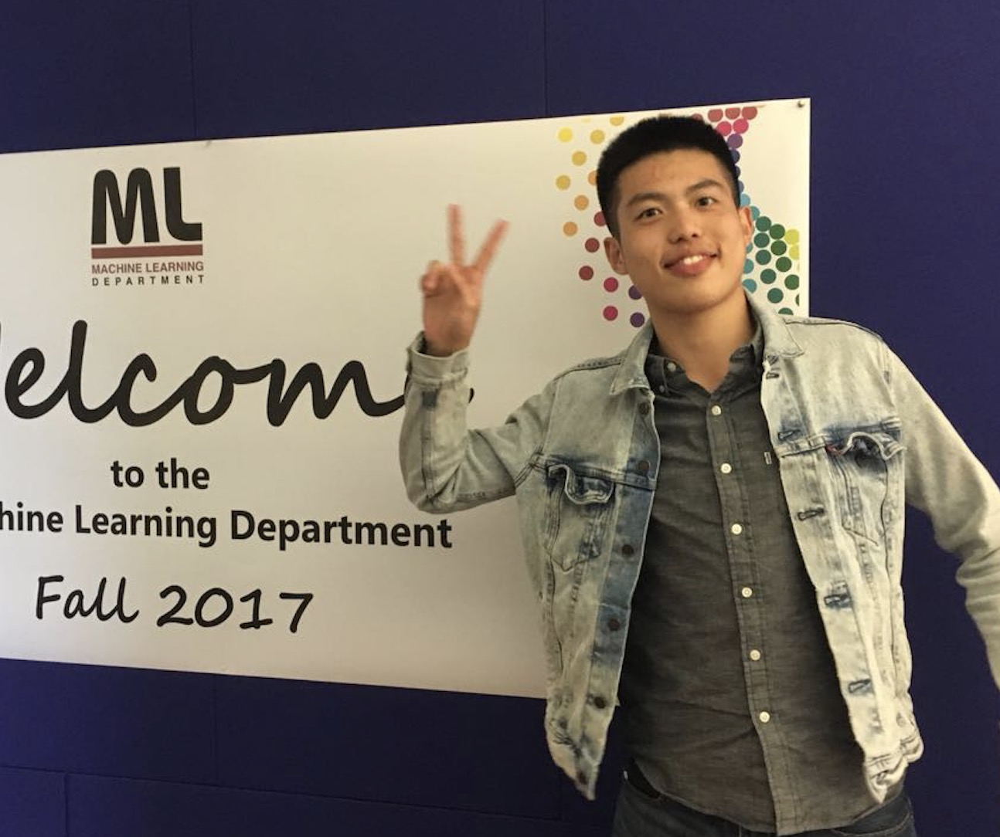

Bachelor of Engineering
Telecommunication Engineering
School of Information and Telecommunicaion Engineering
Beijing University of Posts and Telecommunications
Email: xiang.liu1995[at] gmail.com
Github: Lebron Lambert
Research Intern
Face++, Beijing, China, Oct 2017 – Present
Focus on face recognition tasks in computer vision
Research Intern
Sailing Lab, Carnegie Mellon University, Pittsburgh, June 2017 – Sep 2017
Proposed two structured variable selection models with confounding correction
Participated in building the genatic association database
Contributed to GenAMap
Ye, W. Liu, X. Wang, H. & Xing, EP. A Sparse Graph-structured Lasso Mixed Model for Genetic Association with Confounding Correction. Bioinformatics submitted
Liu, X., Wang, H., Ye, W. & Xing, EP. Sparse Variable Selection in High Dimensional Heterogeneous Data with Tree Structured Responses AAAI 2018 submitted
Cao, J. Wu, Z. Ye, W. & Wang H. Learning Functional Embedding of Genes Governed by Pair-wised Labels. ICCIA 2017 oral presentation
Wang, H. Liu, X. Ye, W. Everlasting Iatric Researcher (Eir): Identifying the Article and Reading for Genetic Association Knowledge. 5th Annual LTI Student Research Symposium poster
Interdisciplinary Contest In Modeling Meritorious Winner, 2016
National Scholarship for three straight years (Top 1%), 2015-2017
BUPT Mathemetics Compettition Third prize, 2015
Caifang Zhuang·Chongwen Zhuang Scholarship (200 students in Fujian Province), 2014
National Olympiad in Informatics in Provinces (NOIP) first prize, 2013